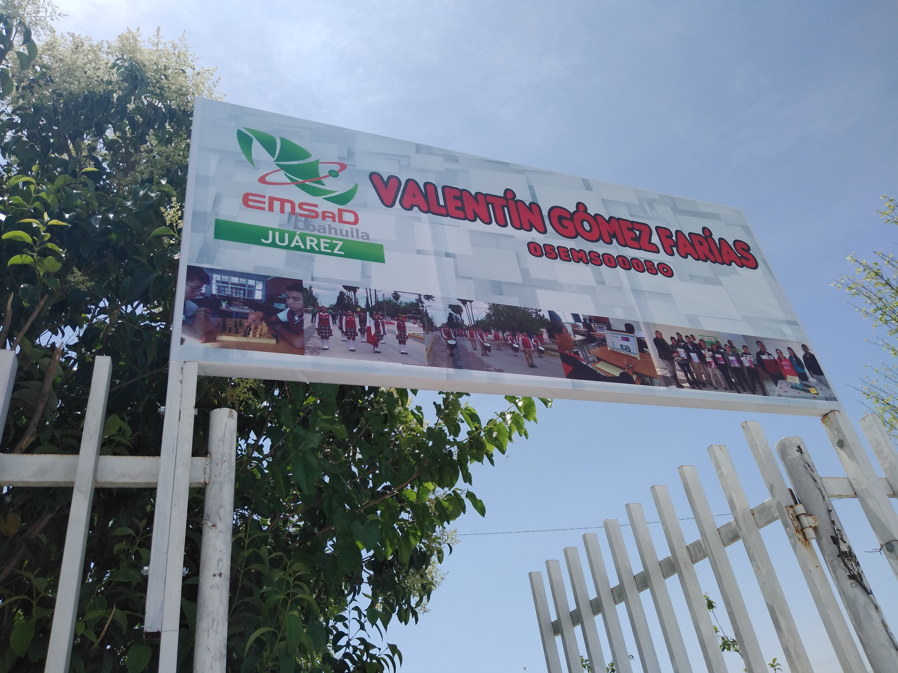

Mis Estudios
Yo siempre he considerado que la educación es algo primordial para una buena formación de una sociedad, por lo tanto a continuación voy a nombrar las instituciones educativas a las que he pertenecido:
•Escuelas en Estados Unidos
Estuve en varias escuelas en Estados hasta cruzar 3 grado de primaria pero no pongo nombres porque no me acuerdo muy bien de los nombres de la escuela.
•Escuela Primaria Raúl Bermea Santos (2010-2013)
Esta escuela fue la primera en la que estuve e recién llegado a México por lo tanto entre desde 4 año hasta terminar mi educación primaria en el año del 2013.
•Secundaria Elsa Hernández de De las Fuentes (2013-2016)
Ya adaptado de una mejor manera al idioma ingrese a la secundaria de mi comunidad donde cruce los grados con buenas calificaciones y con un buen aprendizaje.
•EMSaD Valentín Gómez Farías (2016- Actualmente)
Actualmente curso el 6 semestre de la preparatoria de mi comunidad y que por lo tanto estaré próximo a graduarme si es que cumplo con los proyectos que me quedan el próximo mes.
